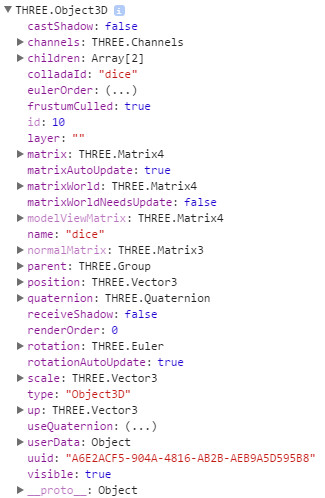

three.min.js and ColladaLoader.js can be included with include_threejs(); :
Note: scene and camera should be global variables:
Here is an example including camera positioning:
Note: If you want to export objects with UV mapped textures you must use the Blender Renderer; the cycles renderer does not work with the exporter.
Note 2: You must UV unwrap textures; generated texture maps do not work with the exporter.
Note 3: Add and position a camera; you can use this camera later to position the Threejs camera (see below).
Once you have built and textured your model, and added lights, export it with File > Export > Collada.
This will produce a .dae file that can be loaded with ColladaLoader.
When you have created your threejs scene you can load your .dae exported from blender:
Objects can be selected with the getObjectByName method:
Here are some useful object properties and methods:
- object.position.(x,y or z): get or set the position in one axis
- object.rotation.(x.y or z): get or set the rotation in one axis
- object.scale.(x, y or z): get or set the scale in one axis
- object.position.set(x, y, z): Set all positions
- renderer.setSize(width, height): Set renderer size
- renderer.setClearColor('#ffffff', [optional] alpha): Set the renderer bg colour
- scene.add(object): Add object to scene
Whilst your blender camera cannot be used in threejs, it can be used to position a threejs camera:
Note: You obviously cannot do this until after your blender scene is loaded, so a good place to put this code is with the ColladaLoader function.
Threeejs scenes require a renderer:
Note: renderer should be stored in a global variable.
Nothing will display in your threejs scene until it is rendered:
Remember: renderer, scene, and camera are global variables.
Security of some web browsers (Chrome is one) can stop threejs running from a local drive. This security restriction can be bypassed by running Chrome with the following switch:
To apply this, create a shortcut to Chrome and then right-click on this shortcut and choose 'Properties'. Add --allow-file-access-from-file to the end of the Target and click OK.
Adding and modifying materials on imported objects is easy, but not obvious how to do.
Here are 2 ways to make a new material:
When refering to the material of an imported object you need to use object.children[0].material, NOT object.material as you might expect.
Example 1: Set the opacity of the material on the 'dice' mesh to 0.2 (20%):
Note: A material needs transparent = true for opactity to render.
Example 2: Create a red material with 50% opacity and add to the 'dice' object:
A material can be made double sided with:
PNGs can be used as textures; if the PNGs have transparency then this will be used as long as the material has transparent = true;
Using a browsers in-built debugging makes a lot of sense when trying to debug 3D code, for example....
....will put a load of data about the dice object in a nice tree structure (access the log from the browser's developer tools - F12 on Chrome):
Nodes with arrows next to them are expandable for more information, e.g. expand the children node and you will see the material.
This simple scene uses many of the above techniques. You can view all of the css and javascript in the files threejs.js and threejs.css.